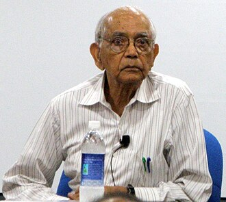

유클리드 자로 부족하다면, 분포와 분포 사이를 재는 자는 어디서 구해야 할까? 뜻밖에도 그 자는 기계학습보다 훨씬 먼저, 오래된 두 학문이 만나는 자리에서 한 번 나온 적이 있다.
이 책의 제목에는 두 단어가 붙어 있다. 둘 다 오래된 단어다.
기하학 — 변하지 않는 것을 찾는 학문
기하학은 수천 년 동안 땅과 도형의 학문이었다. 유클리드는 점, 선, 각에 대한 몇 개의 공리에서 출발해 도형의 성질을 쌓아 올렸다.
19세기에 이 오래된 학문이 스스로를 다시 정의한다. 1872년, 펠릭스 클라인은 에를랑겐 대학에 부임하며 기하학을 이렇게 정리했다. 어떤 변환들을 허락할지 정하고, 그 변환 아래에서 변하지 않는 성질을 연구하는 것이 기하학이다. 밀어 옮기기와 회전을 허락하면 길이와 각이 남는다. 그것이 유클리드 기하학이다. 더 많은 변환을 허락하면 남는 것이 줄고, 다른 기하학이 된다.
"무엇이 변하지 않는가"라는 질문은 이 책에서도 계속 돌아온다. 분포의 이름표(좌표)를 바꿔도 변하지 않는 거리는 무엇인가. 놀랍게도, 그런 거리는 사실상 하나뿐이라는 정리가 있다.
정보 — 일상어에서 숫자로
"정보"는 오랫동안 일상어였다. 1948년, 벨 연구소의 클로드 섀넌이 이 단어에 정확한 숫자를 매겼다. 드문 일이 일어나면 많이 놀라고, 흔한 일이 일어나면 적게 놀란다. 그 놀라움의 평균이 엔트로피이고, 엔트로피는 메시지를 아무리 영리하게 0과 1의 부호로 줄여 적어도 넘을 수 없는 평균 길이의 한계다. 놀라움, 엔트로피, 부호의 길이가 하나로 이어졌다.
교차점
두 학문이 만나는 자리에는 통계학자가 먼저 서 있었다. 통계학자가 부딪힌 물음은 이런 것이었다. 앞면이 나올 확률을 모르는 동전이 있다. 100번 던져 앞면이 30번 나왔다면 앞면 확률을 0.30으로 어림한다. 그런데 같은 동전으로 실험을 다시 하면 38번, 또 하면 25번이 나온다(앞면 확률이 0.3인 동전을 컴퓨터로 흉내 낸 값이다). 어림값이 실험마다 흔들린다. 던지는 횟수는 그대로 두고 앞면 비율보다 영리한 어림 방법을 찾으면, 이 흔들림을 얼마든지 줄일 수 있을까?
1945년, 인도의 젊은 통계학자 라오(C. R. Rao)는 아무리 영리하게 어림해도 줄일 수 없는 바닥이 있다는 것을 부등식으로 썼다.
크라메르-라오 부등식이라 불리는 식이다. 데이터 하나가 모수에 대해 알려 주는 양, 피셔 정보 I가 크면 벽이 낮다. 더 정확히 맞힐 수 있다. I가 작으면 아무리 영리한 방법을 써도 추정값은 일정 이상 흔들린다.
라오는 여기서 멈추지 않았다. 같은 논문에서 그는 이 피셔 정보를 분포들의 공간에 까는 자, 곧 곳마다 작은 걸음의 길이를 재는 규칙으로 읽었다. 그 자로 두 분포 사이의 거리를 잴 수 있다고 제안했다. 통계학과 미분기하학이 악수한 순간이다.
그 씨앗이 정보기하학이라는 체계로 자라기까지는 수십 년이 더 걸렸고, 기계학습에 본격적으로 쓰이기 시작한 것은 모델이 거대해진 21세기의 일이다.
직접 움직여 보기
불러오는 중…
파이썬
import numpy as np
rng = np.random.default_rng(0)
theta, n = 0.3, 100 # 앞면 확률, 한 번에 던지는 횟수
I = 1 / (theta * (1 - theta)) # 동전 한 번의 피셔 정보
k = rng.binomial(n, theta, size=200_000) # 실험 20만 번, 매번 n번 던져 앞면 수를 센다
est = k / n # 추정량: 앞면 비율
print(f"추정량의 분산 {est.var():.6f}")
print(f"하한 1/(n·I) {1 / (n * I):.6f}")
for n2 in [25, 100, 400]:
print(f"n={n2:<4} 하한의 제곱근(표준편차) {np.sqrt(1 / (n2 * I)):.4f}")
# 추정량의 분산 0.002094
# 하한 1/(n·I) 0.002100
# n=25 하한의 제곱근(표준편차) 0.0917
# n=100 하한의 제곱근(표준편차) 0.0458
# n=400 하한의 제곱근(표준편차) 0.0229
앞면 비율이라는 소박한 추정량이 벽에 딱 붙어 있다. 그리고 흔들림(표준편차)을 절반으로 줄이려면 동전을 네 배 던져야 한다.
이 책이 그리려는 지도
이 책은 학습, 추론, 생성의 뒤에서 작동하는 기하학적 구조를 그린다.
앞에서 본 마법들도 이 지도 위에 자리가 있다. 두 모델의 가운데를 취하는 일은 덧셈과 곱셈의 "두 개의 길"과, 분포를 가장 가까운 점으로 내리는 일로. LoRA가 좁은 방향으로 움직여도 되는 이유는 넓은 공간 속에 얇게 펼쳐진 곡면으로. 같은 한 걸음이 곳에 따라 다른 변화를 만드는 이유는 피셔 정보로. 노이즈에서 그림을 꺼내는 생성 모델은 분포와 분포를 잇는 길로.
수확
기하학도 정보도 너무 기본적인 학문이어서, 오히려 둘이 만난 것은 늦었다. 그 만남이 지금의 AI를 설명하는 언어가 되고 있다.
그 언어의 첫 단어는 놀라울 정도로 단순하다. “확률분포 하나를 점이라고 부르자.” 이 한 문장에서 모든 것이 시작된다. — 정말로?
인물 이야기 — 라오와 “스물다섯의 논문”

라오(C. R. Rao)
1945년, 인도 캘커타. 스물다섯 살 안팎의 칼리암푸디 라다크리슈나 라오(C. R. Rao)는 인도통계연구소(ISI)의 견습 연구원이었다. 2년 전 캘커타 대학에서 통계학 석사를 마쳤고, 연구소에서 연구를 하며 대학에서 시간강사로 가르치고 있었다. 박사학위는 아직 없었다. 그것은 몇 년 뒤, 다른 대륙에서의 일이다.
그가 그해 캘커타 수학회 회보에 실은 논문은 열 쪽 남짓이었다. 제목은 「통계 모수 추정에서 얻을 수 있는 정보와 정확도」. 겉보기에는 평범한 질문이었다. 추정량의 정밀도에 한계가 있는가?
피셔(Ronald Fisher)는 이미 1920년대에 그 벽의 존재를 알고 있었다. 표본이 아주 많을 때 최대우도추정(관측에 가장 높은 확률을 주는 모수를 고르는 방법)이 그 벽에 닿는다는 것을 보였다. 라오는 코시-슈바르츠 부등식 한 줄로, 표본 수와 상관없이 모든 불편추정량의 분산이 피셔 정보의 역수보다 작아질 수 없다는 것을 보였다.
같은 벽을 본 사람은 여럿이었다. 영국의 에이트컨(Alexander Aitken)과 실버스톤(Harold Silverstone)이 1942년에, 프레셰(Fréchet)가 1943년에, 다르무아(Darmois)가 1945년에 같은 부등식에 닿았고, 스웨덴의 크라메르(Cramér)는 1946년의 교과서에 그것을 실었다. 그래서 이 부등식은 크라메르-라오 부등식, 또는 프레셰-다르무아-크라메르-라오 부등식이라 불린다.
그러나 같은 논문의 뒷부분은 라오만의 것이었다. 그는 모수로 이름 붙은 분포들의 모임을 하나의 공간으로 보고, 피셔 정보 행렬을 그 공간의 리만 계량(곳마다 작은 걸음의 길이를 재는 규칙)으로 삼았다. 그리고 그 계량으로 잰 가장 곧은 길(측지선)의 길이를 두 분포 사이의 거리로 제안했다. 좌표를 어떻게 바꿔도 변하지 않는 거리였다. 오늘날 피셔–라오 거리라 부르는 것이다. 같은 논문에는 뒤에 라오-블랙웰 정리라 불릴 결과도 들어 있었다.
이듬해 여름, 라오는 영국으로 건너갔다. 케임브리지 킹스 칼리지에서 피셔의 지도를 받았고, 1948년에 박사학위를 받았다.
씨앗이 나무가 되기까지는 오래 걸렸다. 미분기하학의 방법이 통계학의 중심으로 들어온 것은 1975년 에프론의 통계적 곡률을 거쳐, 1980년대 아마리 슌이치의 작업에 와서였다.
2023년, 라오는 그 열 쪽짜리 논문으로 국제 통계학상을 받았다. 같은 해 여름, 라오는 102세로 세상을 떠났다. 스물다섯 무렵에 심은 씨앗이 기계학습의 언어가 되는 것을 지켜본 드문 사람이다.
문제 6. 여론조사의 ±3.1%포인트
여론조사 기사에는 “1,000명 조사, 95% 신뢰수준에서 표본오차 ±3.1%포인트” 같은 줄이 붙는다. 이 ± 값은 지지율 어림값의 흔들림(표준편차)에 1.96을 곱한 값이다. 지지율이 θ인 사람들 가운데 무작위로 n명에게 물어, "지지한다"고 답한 비율로 θ를 어림한다. (가) θ = 0.5, n = 1,000일 때 흔들림과 ± 값을 구하라. (나) 기사는 조사 하나에 ± 값을 하나만 적는다. 같은 조사에서 지지율이 10% 안팎인 후보의 실제 ± 값은 얼마인가? (다) 기사는 왜 한 숫자만 적을까? (위 위젯의 「문제 6 값」 단추로 θ = 0.5, n = 1,000을 불러올 수 있다.)
불편추정량이요. 평균적으로 참값을 맞히는 것들만요. 라플라스는 조금 치우친 대신 흔들림을 줄인 거니까 애초에 대상이 아니에요.
김민준
조별 과제 점수를 조 평균 쪽으로 조금씩 당겨서 매기는 조교 같네요. 점수 편차는 줄지만, 잘한 사람 점수는 조금 깎이고.
선생님
좋은 비유예요. 그리고 공짜는 아니에요. θ = 0.02처럼 끝에 가까운 동전이면 라플라스의 제곱오차는 0.000277로, 하한 0.000196보다 커져요. 끌어당기는 쪽이 참값에서 멀면 치우침이 비싸져요.
문제 8. 드문 실수를 재려면 몇 문항이 필요한가
언어 모델 두 개를 문항으로 시험한다. 모델 A는 정답률이 70% 안팎이고, 모델 B는 해로운 답을 내는 비율이 0.1% 안팎이다. 문항마다 결과가 서로 독립이라고 보고, 맞힌(또는 해로운 답을 낸) 문항의 비율로 그 확률 θ를 어림한다. (가) A의 정답률을 흔들림(표준편차) 0.01, 곧 1%포인트로 재려면 문항이 몇 개 필요한가? (나) B의 비율을 그 비율 자체의 10%, 곧 흔들림 0.0001로 재려면? (다) 문항 하나의 피셔 정보는 B 쪽이 A보다 200배 넘게 크다. 그런데 왜 문항은 훨씬 더 많이 필요한가?